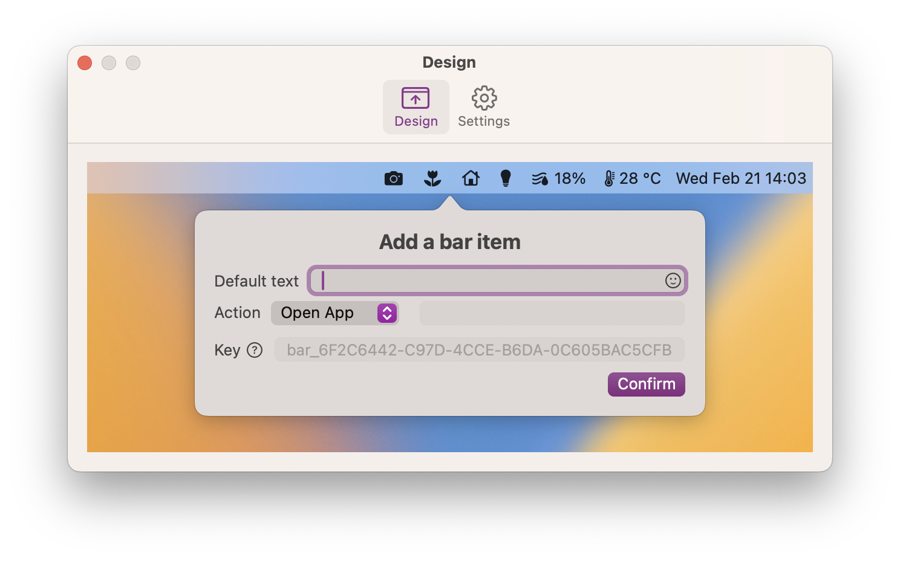
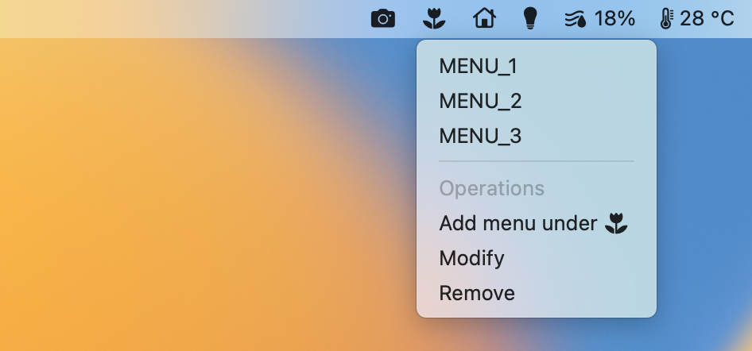
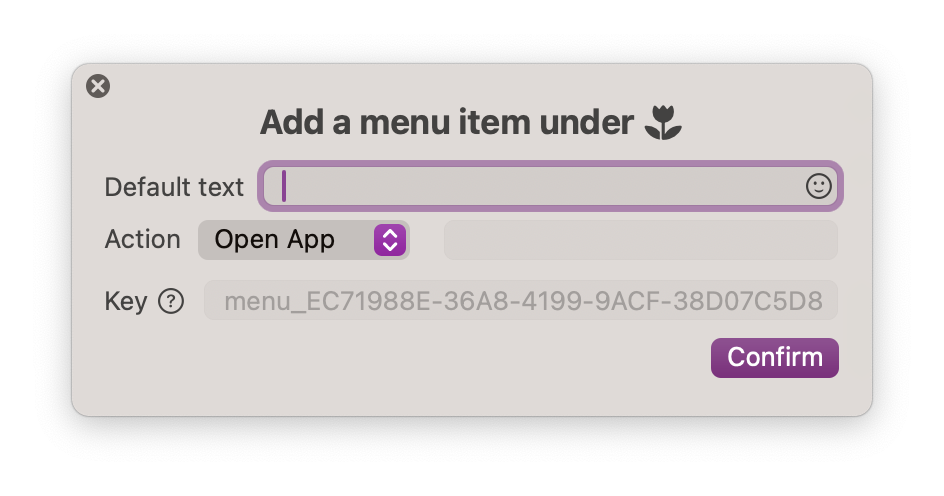
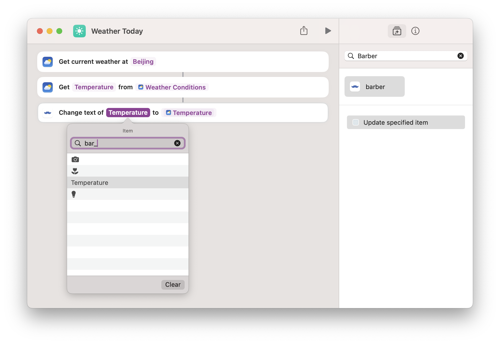

Barber is a macOS menu bar application that lets you create menu bar icons on the fly. You can display an icon or text in the menu bar, assign an action to it, either trigger a link or open a menu. You can display some important text or use it as a launcher.

In the design window, click on the empty space of the menu bar, a popover will appear asking for information needed for a bar item.
After that, the newly created bar item will appear in the design window, and also in the system menu bar. By clicking on the bar item in the design window, you can choose to modify or remove it.
Usually, a menu bar icon is used to display a menu of options. You can also customize the menu under a bar item.

In the design window, click the bar item you just created. Select “Add menu under”, a smiliar popover will appear, asking for the text and action for the menu item.

After that, when you click the bar item again, the menu item you just created will show up. By clicking on the menu item, you can modify or remove the item.
Note: If you create menus for a bar item, the action of the bar item won’t be triggered when it is clicked.
After you finish setting up Barber in the design window, you may want Barber to run all the time and launch silently.
You can customize Barber’s behavior in the settings window:
If you uncheck the second box, Barber will run silently in the background. If you need to open the design window again, simply launch Barber from the Applications (e.g. Launchpad or Finder).
The icons and menus you create with Barber can be controlled with Shortcuts app in macOS. You can compose your own Shortcuts flow with it and other apps.
For example, you can display information from Weather app in the menu bar:

You can use the key to find item you’d like to change in Barber’s Shortcuts scripting command as the screenshot above.